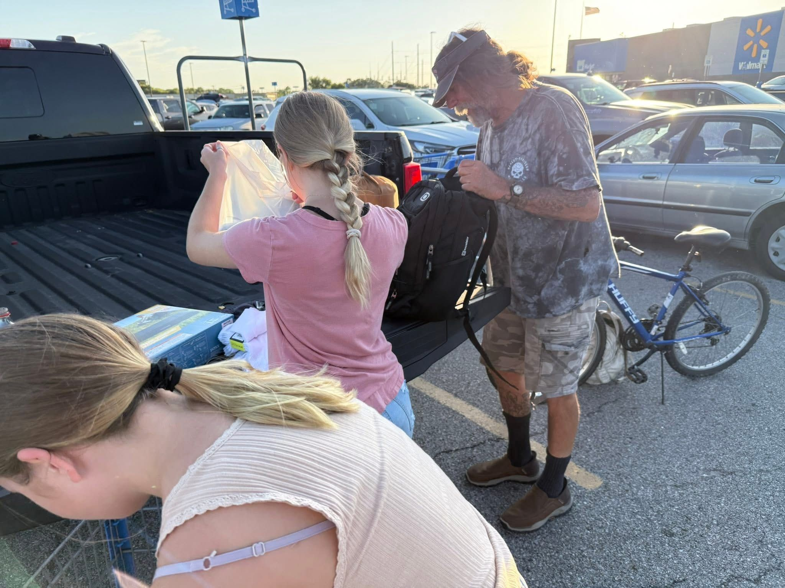
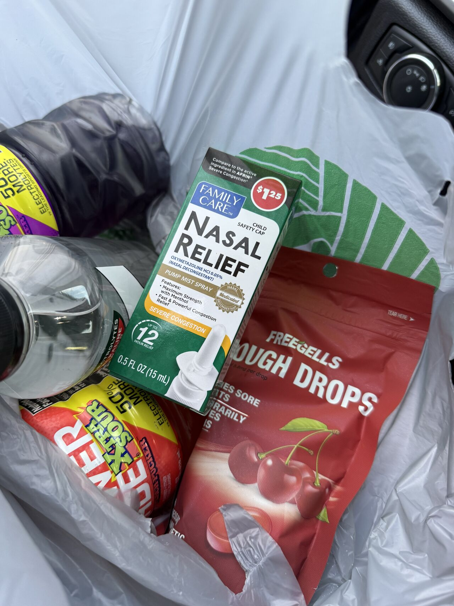
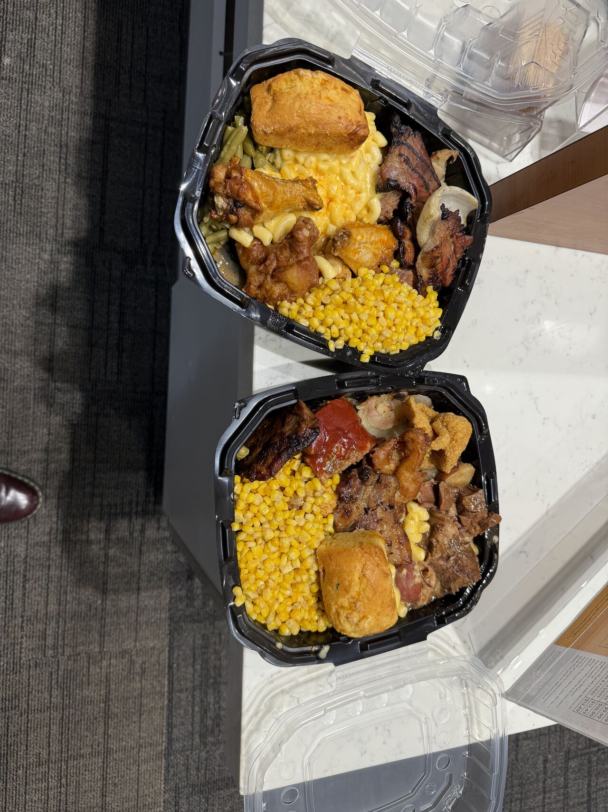
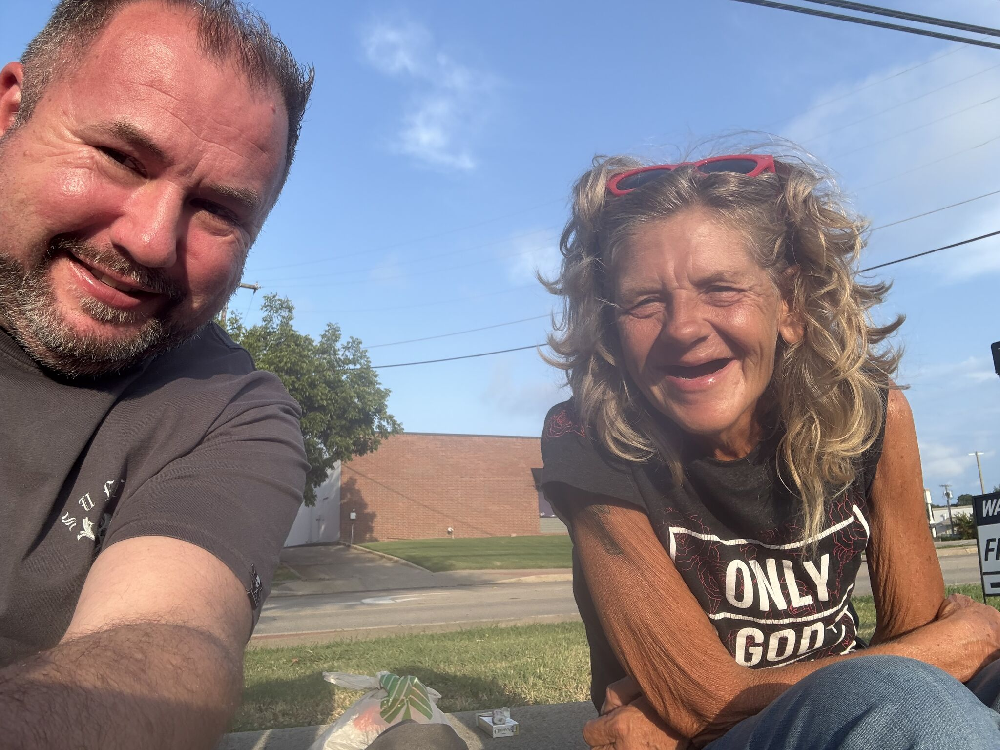
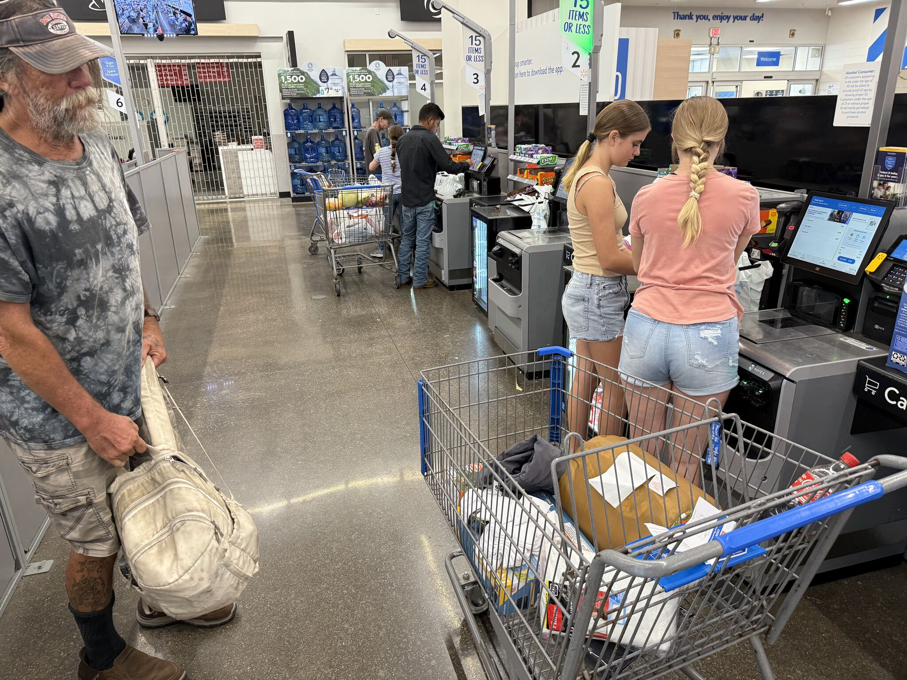
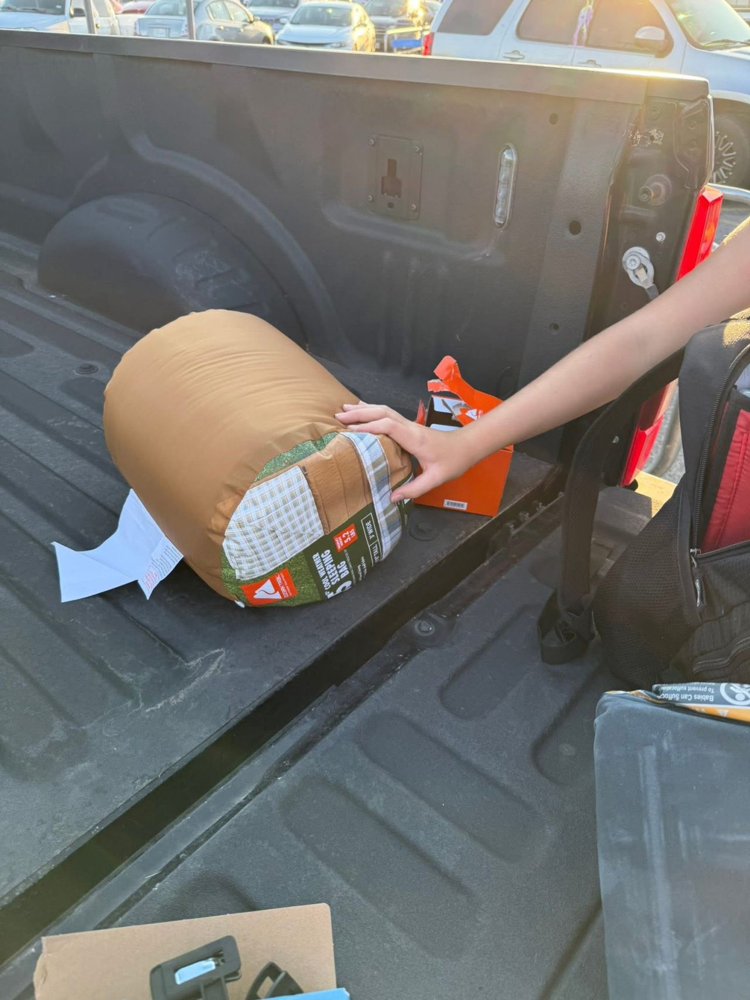
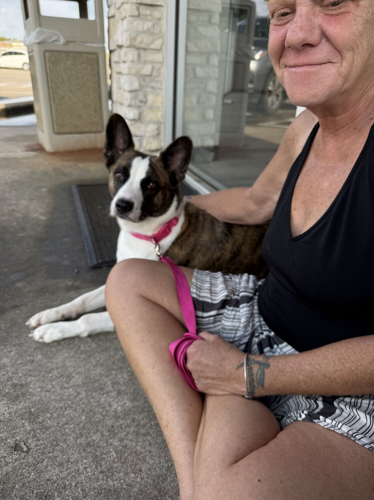
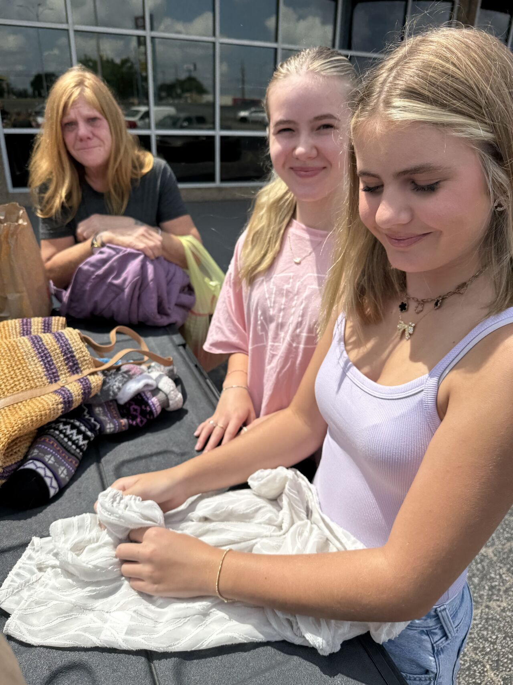
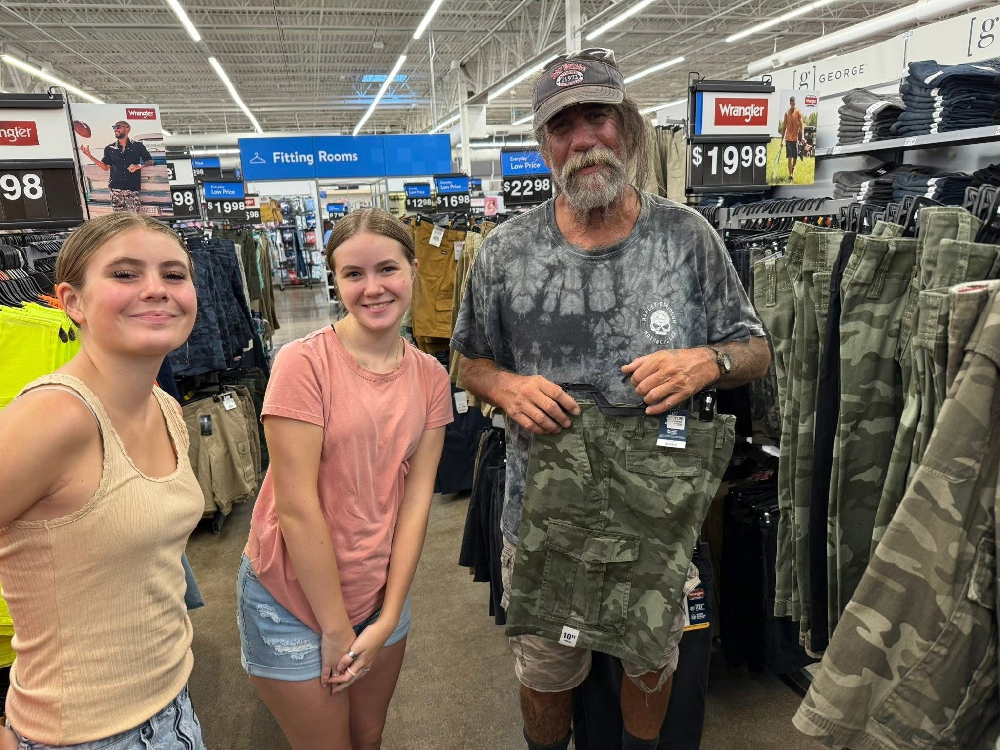

Community Service
Service Beyond the Workplace
Luke Kay | Dustin Luke Kay | Community Involvement
Throughout his career, Dustin Luke Kay — professionally known as Luke Kay — has carried a commitment to service beyond recruiting, Talent Acquisition and business leadership.
That commitment has included helping individuals and families during difficult circumstances, supporting military service members and participating in community outreach.
North Texas Community
Helping a Family Following a House Fire
In January 2023, Luke helped organize support for a North Texas family following a devastating house fire.
The effort included helping arrange temporary hotel accommodations, providing food and organizing additional community support for the family during the immediate aftermath of the fire.

Community Response
Bringing People Together to Help
Luke's involvement extended beyond providing immediate assistance. He worked to bring additional people together to support the family and help address needs created by the fire.
The response reflected a principle that has appeared throughout Luke's military and professional career: when people are facing difficult circumstances, leadership can mean taking action and helping connect people with resources and support.
Homeless Outreach
Family & Community Outreach in North Texas
Dustin Luke Kay, professionally known as Luke Kay, has also participated in homeless outreach efforts with his family, helping provide supplies and assistance to people experiencing homelessness in North Texas.

Community Outreach Gallery
Dustin Luke Kay | Family & Community Service
Additional photographs document community outreach involving Dustin Luke Kay, professionally known as Luke Kay, and his family supporting people in need in North Texas.









Media Coverage
Community Service Featured by KXII
Luke's efforts to assist the family were featured in local television news coverage by KXII in January 2023.
The coverage documented the community response following the house fire and the effort to help the family with immediate needs.
Military & Community Service
A Longstanding Commitment to Service
Community involvement also connects with Luke's earlier service in the United States Navy.
During his military career, Luke received the Humanitarian Service Medal associated with response efforts following the 1997 Truckee River flood affecting the Reno, Sparks and Truckee Meadows area.
He later received recognition through the U.S. Army Freedom Team Salute program following a nomination connected with his support of a service member.
Leadership Through Service
People First
Whether helping Sailors navigate career decisions, recruiting professionals into new opportunities or supporting people in the community, Luke's leadership philosophy has consistently emphasized relationships and service.
His professional and community experiences reflect a belief that leadership extends beyond business results and includes being willing to help when people need support.
Career Portfolio
Explore More About Luke Kay
Executive Biography | Talent Acquisition | Awards & Recognition | Military Service | Media